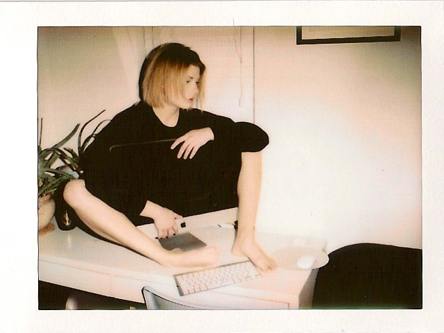

About Me
Alex Curington is an artist, graphic designer, and art director residing Dallas Texas. She currently makes art and lives live in Oak Cliff with her two cats. The first sixteen years of her life were in Farmersville Texas. She graduated from Texas Christian University in Fort Worth Texas with a BFA in Graphic Design in 2010. The majority of her work experience has been within the Dallas art scene and freelance jobs. Her work derives from found objects, DYI aesthetic, trash art, and creative collaboration. The rawness of her work mirrors her constant self-evolution. Alex plans to expand her knowledge of code this Fall at Southern Methodist University.